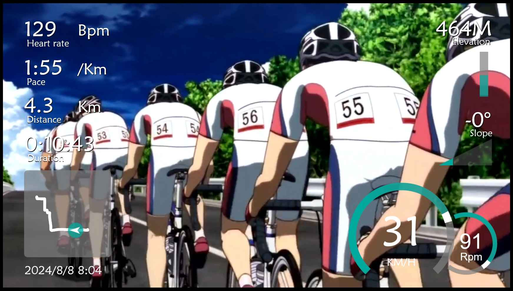
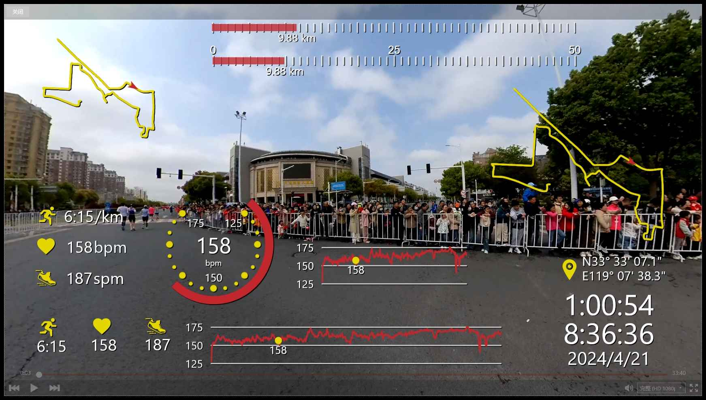

inska风格 inska style
拥有酷炫的仪表盘，适合各种运动。
Featuring a cool dashboard, suitable for various sports.
心率
配速
距离
时长
地图
日期
时速
踏频
坡度
高程
Heart Rate
Pace
Distance
Duration
Map
Date
Speed
Cadence
Grade
Elevation
尝试一下？ Give it a try
选它 okay

No99风格 No99 style
无需99，即可拥有99风格的低配版。
No need for 99, you can have a low-cost version of the 99 style.
步速
步速上下无单位
地图带箭头
地图带箭头大尺寸
经纬度
距离条
距离条[带范围]
时间组合
踏频
踏频上下无单位
心率标尺
心率动画
心率动画上下无单位
心率折线1比4
心率折线1比8
Pace
Pace (no units)
Map with arrow
Map with large arrow
Latitude and longitude
Distance bar
Distance bar [with range]
Time combination
Cadence
Cadence (no units)
Heart rate scale
Heart rate animation
Heart rate animation (no units)
Heart rate line graph (1:4)
Heart rate line graph (1:8)
尝试一下？ Give it a try
选它 okay